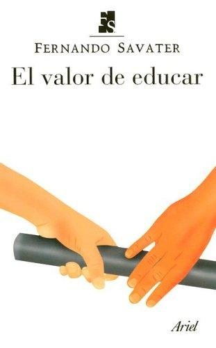

El valor de educarFernando Savater

El valor de educar
Fernando Savater
Ensayo sobre el sentido de educar: transmitir humanidad, enseñar a pensar y formar ciudadanos.
- Publicado originalmente
- 1997
- Enfoque
- Ensayo
- Para quién
- Madres, padres y docentes
- Ficha bibliográfica
- Open Library
Este libro tiene derechos de autor, así que no lo alojamos. Te dejamos la ficha para que sepas de qué trata y lo busques en una librería o biblioteca.
Aprendizaje y psicología educativaPsicología del profesoradoFilosofía aplicada a la vidaÉtica y virtudes